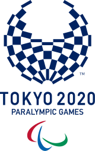
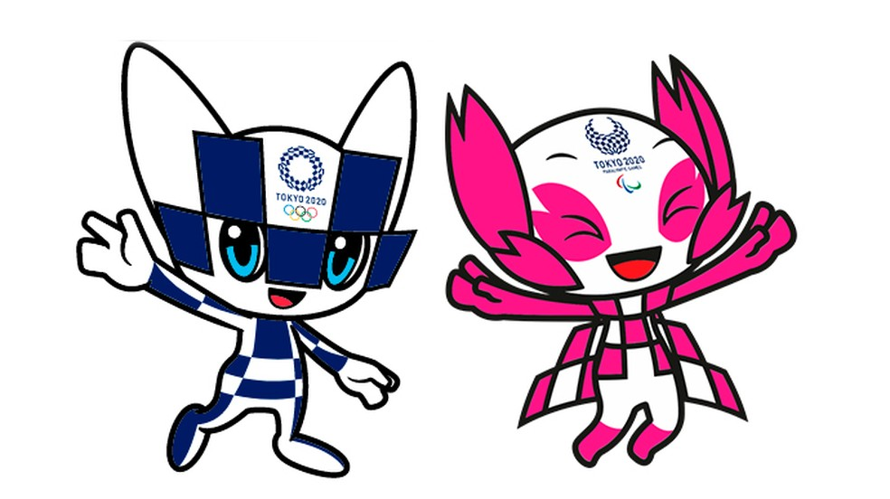
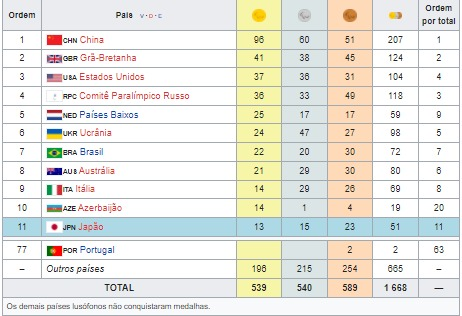

|
  |
Jogos Paralímpicos de Verão de 2020 (em japonês: 2020年夏季パラリンピック会; 2020-Nen Kaki Pararinpikku?), conhecidos oficialmente como os Jogos da XVI Paralimpíada, mais comumente Tóquio 2020, foi um evento multiesportivo para atletas com deficiência organizado pelo Comitê Paralímpico Internacional (CPI) e sediado em Tóquio no Japão. A eleição da cidade-sede ocorreu em 7 de setembro de 2013 na 125ª Sessão do Comitê Olímpico Internacional, em Buenos Aires, capital da Argentina, América do sul. Os jogos ocorreram entre 24 de agosto e 5 de setembro de 2021. Originalmente, os jogos estavam programados para ocorrer entre 25 de agosto e 6 de setembro de 2020, porém, em 24 de março de 2020, o Comitê Olímpico Internacional (COI) e o Comitê Organizador local anunciaram oficialmente que os Jogos Olímpicos e Paralímpicos de Verão de 2020 seriam adiados para 2021, devido ao avanço da Pandemia de COVID-19, marcando a primeira vez que os Jogos Paralímpicos foram adiados. Mesmo sendo realizados em 2021, a organização optou por manter a nomenclatura oficial com a data de 2020. Foi a segunda vez que Tóquio sedia os Jogos Paralímpicos, já que sediaram anteriormente em 1964. Esta edição dos Jogos teve a introdução do badminton e do taekwondo como modalidades esportivas, substituindo a vela e o futebol de sete. |
Modalidades→Atletismo→Bocha →Ciclismo →Estrada →Pista →Basquetebol em cadeira de rodas →Hipismo →Esgrima em cadeira de rodas →Futebol de cinco →Futebol de sete →Goalball →Judô →Levantamento de peso →Natação →Remo →Rugby em cadeira de rodas →Tênis em cadeira de rodas →Tênis de mesa →Tiro com arco →Tiro →Vela →Voleibol Medalhas |